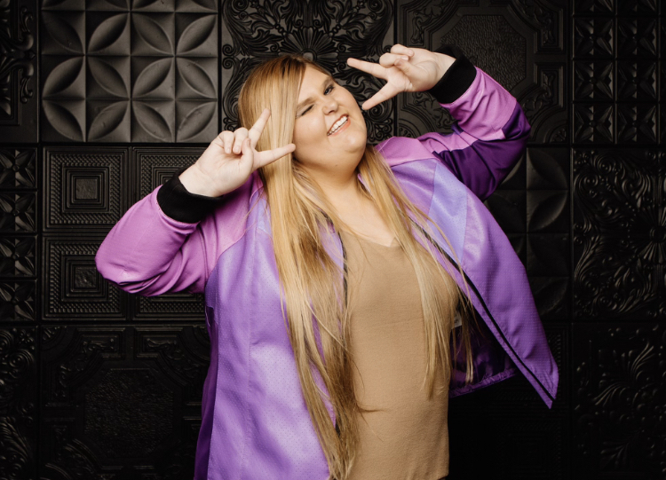

Hi, I'm Emily Crabb
I build creative websites inspired by stories, games, and imagination.
About Me
I'm a web development student learning how to turn ideas into real websites. I enjoy building things that are both functional and creative.
I'm especially interested in making pages that feel immersive and unique rather than just simple layouts.
What I Enjoy
I love reading, video games, and Dungeons & Dragons. Fantasy worlds and storytelling are a big inspiration for me.
I also enjoy experimenting with design and figuring out how layout and color can change the feel of a website.
Goals
Right now, I'm working on improving my HTML and CSS skills and starting to learn JavaScript.
In the future, I want to create more interactive and themed websites, especially ones inspired by fantasy and games.